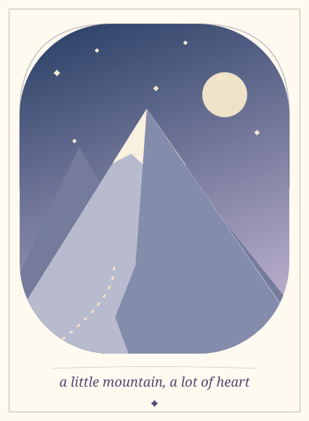

a few worlds I keep close
My bookshelf
Games, anime, and stories I keep coming back to. Pick a little book; I've tucked a note inside each one.
Games I disappear into
Stories that stay with me
Please don't ask me to pick just one favorite. ♡
the official site ↗
My little mood sketch

What should I put on my shelf next? ♡
I'm always looking for another world to disappear into.
leave me a little recommendation ↗A little credit for these beautiful worlds
I keep original mood sketches with these notes. The games and stories belong to their creators; their official sites are below.